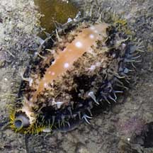
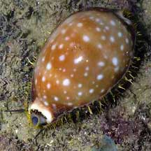
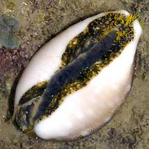

|
|
| shelled snails text index | photo index |
| Phylum Mollusca > Class Gastropoda > Family Cypraeidea |
| Milk-spotted
cowrie Lyncina vitellus Family Cypraeidae updated Jul 2020 Where seen? This large cowrie was seen only once at Kusu Island. Elsewhere, they are found on coral reefs and rocky shores. It was previously called Cypraea vitellus. Features: About 7cm, can grow to 10cm. Shell oval to pear-shaped, yellowish brown with two faint paler bands and scattering of white dots of various sizes. Underside white including the 'teeth'. The living animal has a yellow and black mantle. Sometimes mistaken for a sea slug. When the shell is completely covered in its mantle, it is sometimes mistaken for a sea slug. Here's more on how to tell apart slugs and animals that look like slugs. Human uses: It is collected for food and the shell for the shell trade. |
 Kusu Island, Aug 04 |
 |
 Underside. |
| Milk-spotted cowries on Singapore shores |
On wildsingapore
flickr
|
|
Links
|